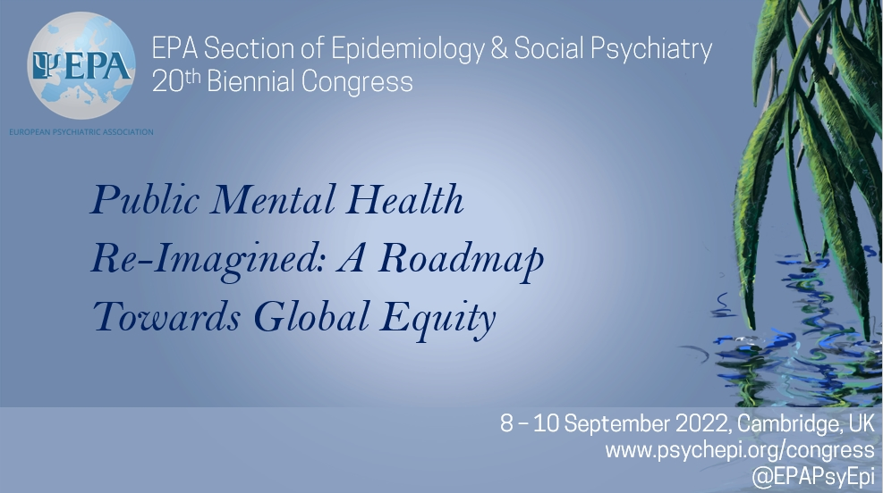

EPA Epidemiology and Social Psychiatry - 20th biennial congress
The year was 2018ish, and we were offered the opportunity to host the next EPA Epi & Social Psych section meeting.
We spent the next year (or so) putting together an exciting programme of rockstar keynotes, inspiring early career researchers, and fun social events. The plan was to welcome delegates to Cambridge for the 2020 section meeting of the European Psychiatric Association’s Epidemiology & Social Psychiatry section meeting. Six months before, however, a small global pandemic had us scrambling for another option. Our Organising Committee chair (Prof James Kirkbride) prudently postponed the meeting until Sept 2022.
A year (or so) later, the plans were dusted off, the keynotes re-invited, the abstracts re-accepted, and we had the immense pleasure of welcoming over 300 people to EPA Psyc Epi & Soc Psyc.
Public mental health re-imagined: a roadmap towards global equity
We brought together renowned keynote speakers (Prof Peter Jones! Prof Ian Colman! Prof Sir Michael Marmot! Prof Inez Myin-Germeys! Prof Ann John), and had a strong line up of presentations, posters, and panels. A psych epi nerd’s dream! (You can see the whole scientific programme on our conference site).
Highlights
In a week of highlights, here were a few of my favourite moments.
1. Chairing the plenary session of a legend
One of the perks of being a member of the local organising committee is to suggest who might be our dream speakers. And sometimes they say yes! Fast forward 3 years, and I found myself on the mainstage introducing one of my public health heros, Professor Sir Michael Marmot.
His research over the past 40 years has transformed the conversation about health inequalities and has inspired a generation of public health researchers working to understand and address inequalities.
2. Sitting on a panel packed with inspiring voices discussing mental health inequalities (and what we can do)
This panel discussion was live-tweeted and live-streamed by the Mental Elf. You can check out a great summary here: Big Twitter thread
or watch the entire discussion on the Mental Elf Youtube Channel.
3. Watching others shine!
One of the truly wonderful parts of mentoring ECRs is watching them develop as researchers. This year, I got to see one of my previous fellows, Kate Dotsikas, be recognised as an honourable mention for the ECR presentation prize.
I also got to watch many of my colleague and friends take the stage, giving keynotes, oral presentations, and rapid fire talks that were eloquent and inspiring.
4. Reconnecting with friends and collaborators
Conferences aren’t all lecture halls and power points. Some of the best conversations are had in a boat or over a glass of wine. It was truly wonderful to re-connect with so many friends and meet new ones over the week, which was particularly sweet after the years of closed borders, lockdowns, and zoom calls that have become so familiar. There is something special about being together again that even the best wifi connection and zoom link cannot replicate.
While I was coasting on a potent mixture of adrenaline and caffeine by the end of the week, I am feeling re-energised following this conference and ready jump back into my research.